Post image
Events
March 2026
Post title pulls in from the blog
A one or two line excerpt shows here automatically from the post tagged events.
Read more →Come as you are. Leave as one of us.
Since 2014 200+ members 11+ black belts on the mat 4 academies across the South Island
★★★★★ 5.0 · 161 Google reviews
Word on the mats
A 5.0 average across 161 Google reviews. And 69 of them call out the same thing: the welcome.
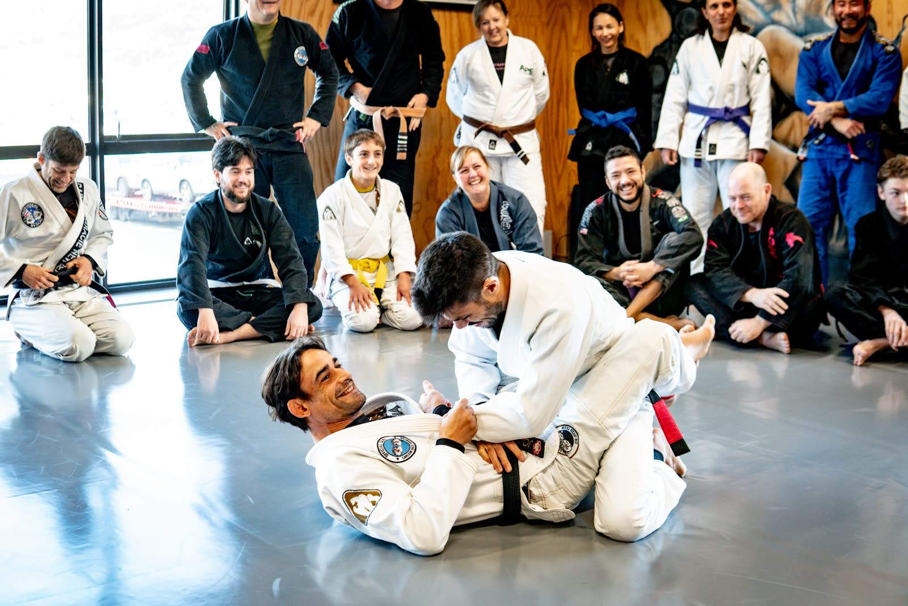
“A brilliant gym with a great community. Made to feel welcome from the moment I walked in.”Callum MackinnonDropped in while travelling
“No matter your age, gender, body shape or fitness level, there is nothing but encouragement from everyone.”NatashaStarted in 2026, now trains 6 days a week
reviews mention the welcoming atmosphere. It is not an accident.
Google review topics“A completely safe space for women to train. Jose and his team are masters at drawing out the very best in everyone. I wouldn’t train anywhere else.”Vicky JenkinsWomen’s classes
“The team has become like my family. One of the best decisions in my life!”Victoria Carling9 years in, both kids on the mats
“Super chilled crew, good mix of belts and good, solid rolls.”Matt “Donut” BowdenVisiting professor, SHED12 BJJ Brisbane
“It’s my happy place.”Amanda Berryman10 years in
Training
The legacy
Carlson Gracie is one of the most important names in the history of Brazilian Jiu-Jitsu. We brought it to the Southern Lakes, and training here puts you in a direct line to the family that founded the sport.
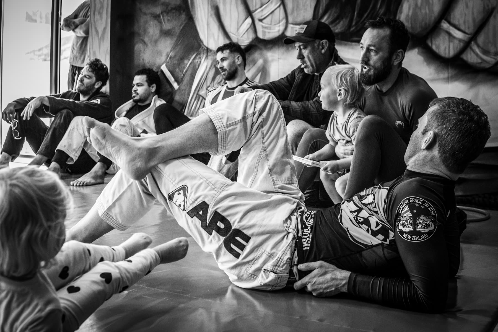
The art passed from Mitsuyo Maeda to Carlos Gracie, and from Carlos to his son Carlson. Carlson defended the family name for two decades without losing, then became one of the finest coaches the sport has produced. Our head professor, Jose Gomes, earned his black belt under Carlson Gracie Jr, so that line runs unbroken onto our mats.
Plenty of gyms teach jiu-jitsu. Few carry this much rank. With more than 11 black belts training regularly at our dojo, alongside a deep bench of high belts, you’ll be hard pressed to find deeper skill and knowledge anywhere in the country.
Carlson opened his mats to everyone and built teams instead of guarding secrets. That is the culture we keep: higher belts lift the newer ones, and everyone has a hand in someone else’s journey. Family-first and everyone-welcome, every single day.
Opened in Queenstown in 2014. From 15 people to over 200 members, one of the largest jiu-jitsu academies in New Zealand.
A family of academies across the South Island Queenstown · Wānaka · Invercargill · South Canterbury
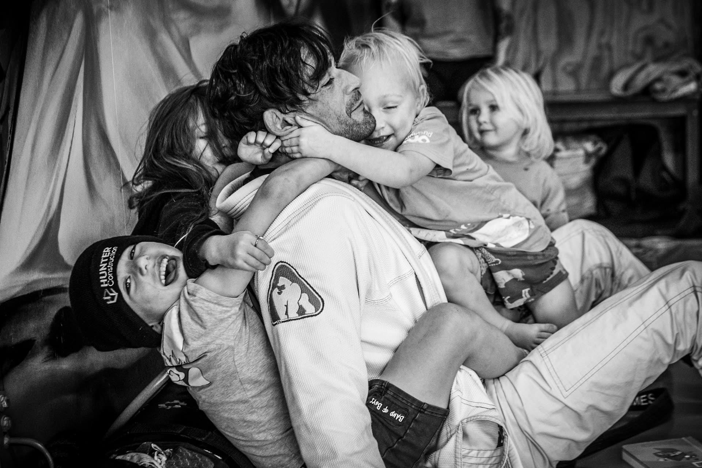
Your coaches
A deep roster of black belts and high belts with decades of combined mat time, guiding everyone from day-one white belts to competition regulars, with dedicated women’s and kids’ classes.


Head professor · Black belt under Carlson Gracie Jr
Training since 1996 and a black belt under Carlson Gracie Jr. Opened Carlson Gracie NZ in 2014 and grew it from 15 to over 200 members, going on to seed academies in Wānaka, Invercargill and South Canterbury.
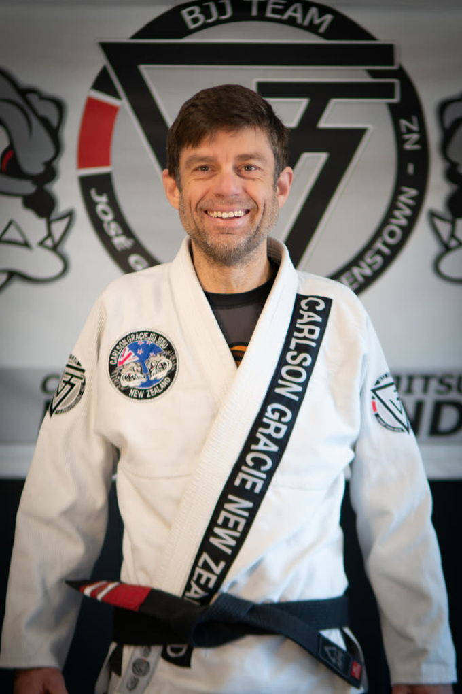
Fundamentals, women’s & kids’ · Black belt
Coaches fundamentals, beginners, advanced, women’s and kids’ classes. Walked in years ago and never left.
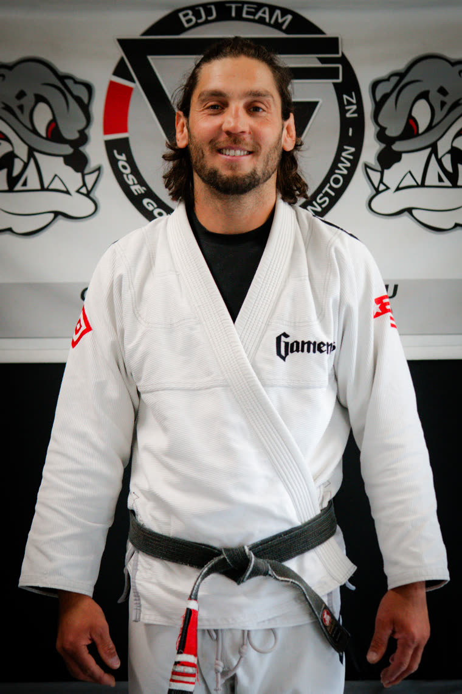
Advanced gi & no-gi · 1st degree black belt
Training since 2004. A key instructor at the academy, teaching the advanced adult classes.
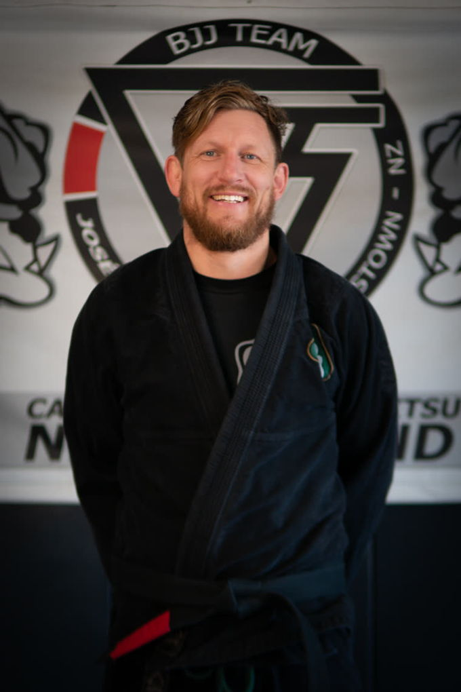
Adults · Black belt
Traded boxing gloves for a gi in 2010 and has trained under Jose since 2011.
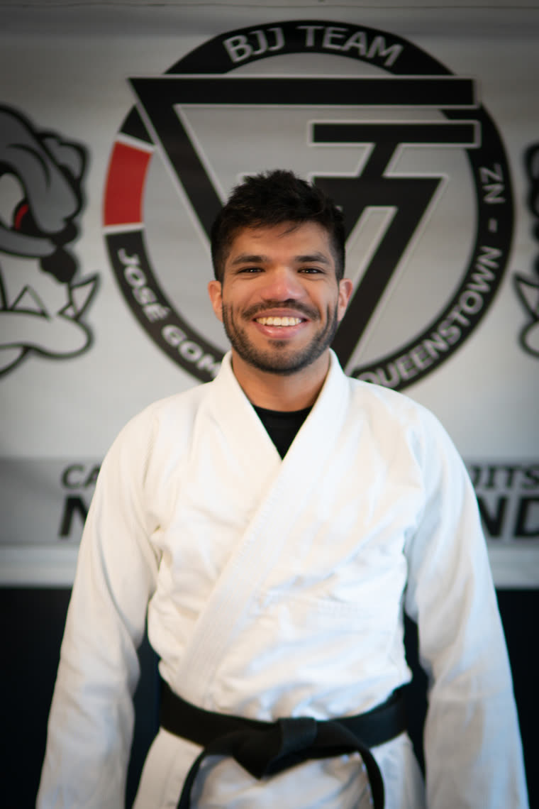
Black belt
Bio to confirm
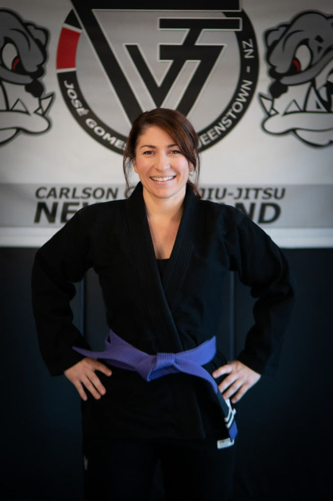
Bio to confirm
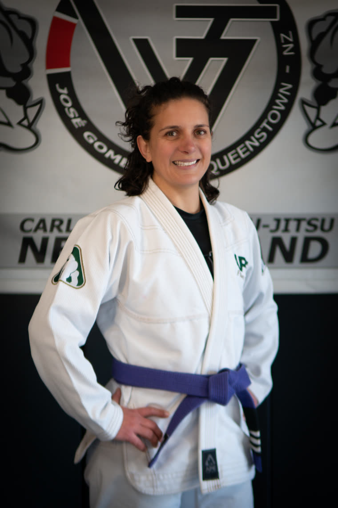
Bio to confirm
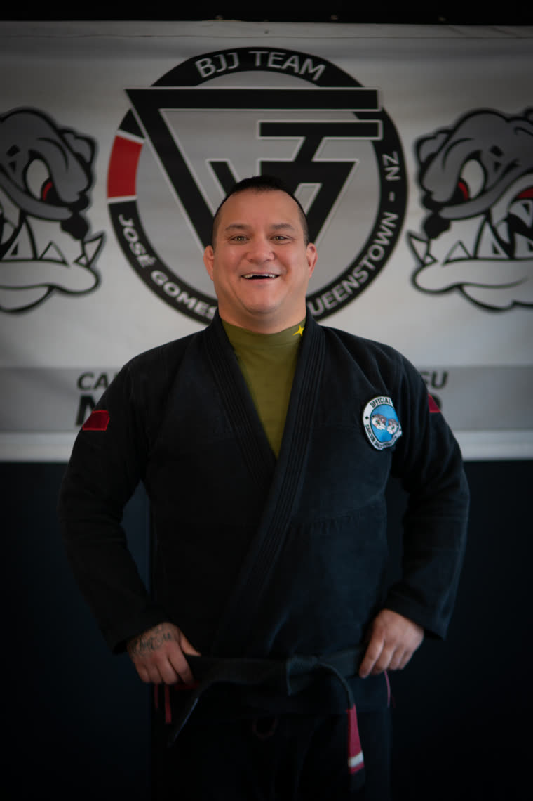
Black belt
Bio to confirm
On and off the mats
Training is only half of it. Every membership comes with our full tutorial library in the app, so the learning carries on after class. Review what you drilled tonight, get ahead of the next move before you arrive, and pick something up whenever you have ten minutes. Filmed by our coaches, on our mats.
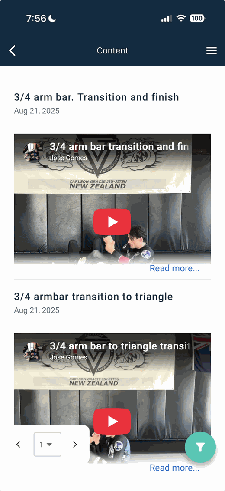
Timetable
Times can shift around holidays and gradings. Check before your first visit.
Seminars & events
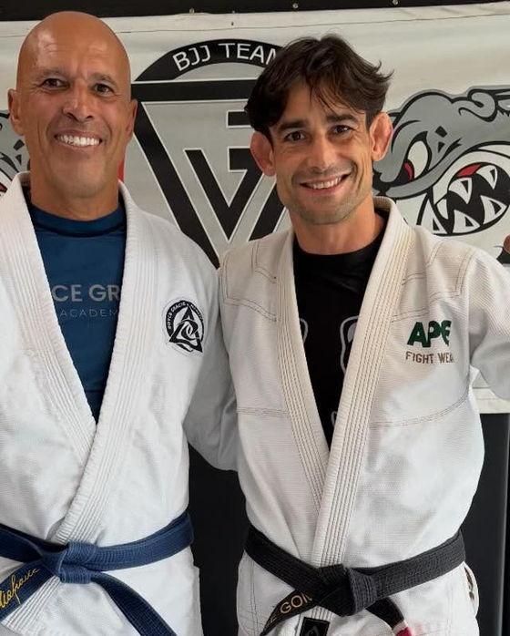
UFC Hall of Famer
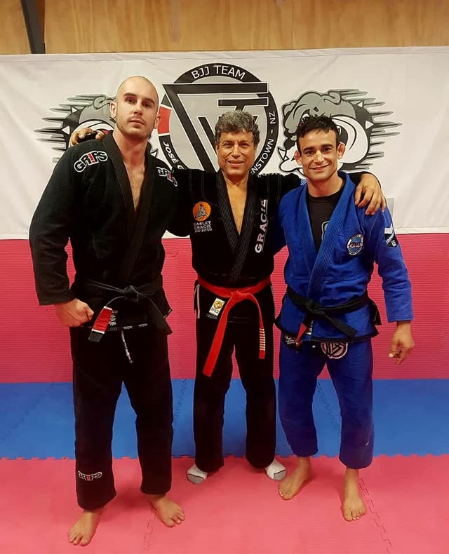
Gracie family red belt
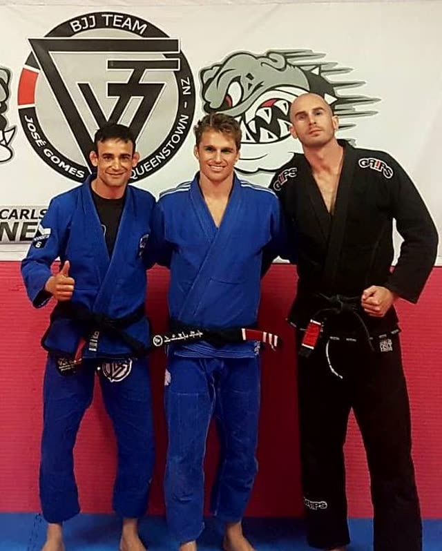
IBJJF world champion
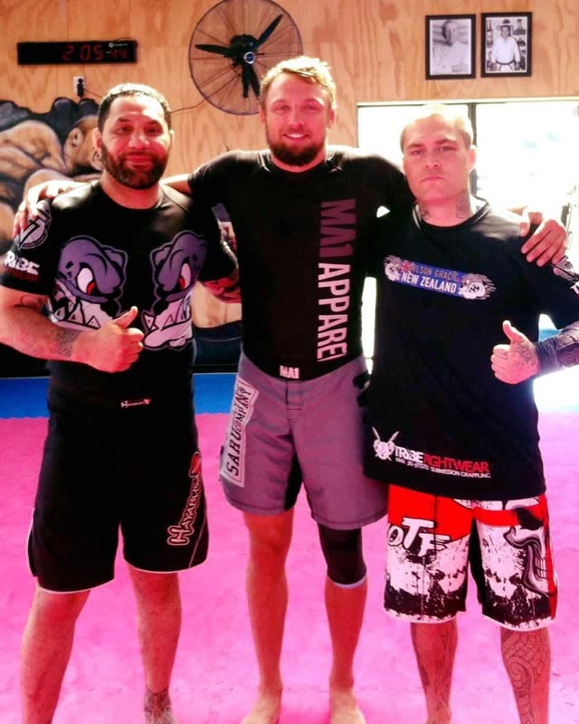
ADCC medallist
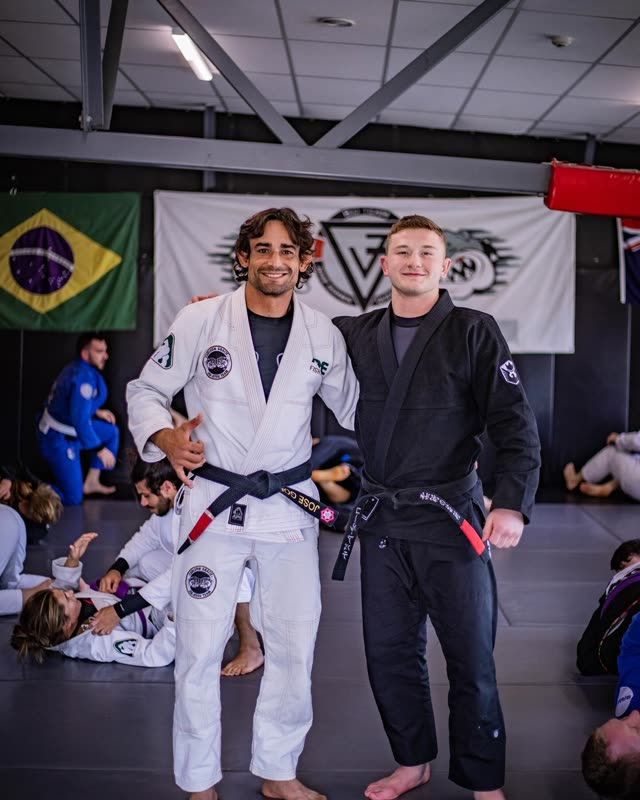
IBJJF world champion
A few of the athletes who have taught on our mats.
We’re lucky to have hosted some of the best grapplers on the planet right here in Queenstown. As a member, you’re in the room for it. You learn their techniques first-hand, drill under their eye, and roll with athletes you have only ever watched compete. That kind of access is rare, and it comes with the mat.
From the blog
Alongside the seminars, we regularly run tournaments in Queenstown and further afield. As part of the team you get the chance to compete, corner your teammates, volunteer, and learn to referee. Every one of those is another way in, and another thread in the community we build on and off the mat.
A one or two line excerpt shows here automatically from the post tagged events.
Read more →A one or two line excerpt shows here automatically from the post tagged events.
Read more →A one or two line excerpt shows here automatically from the post tagged events.
Read more →Good to know
Still wondering about something? Call +64 21 0230 4516, or just turn up and ask at the door.
Shorts and a t-shirt are fine. We have clean gis to borrow, so there is nothing to buy before you know you love it. Bring water, a towel, and no ego.
A few things you won’t find together anywhere else in the region. A direct line to the founding Gracie family, through our head professor’s black belt under Carlson Gracie Jr. A deep roster of black belts on the mat, more than 11 in all. And a family of academies across the South Island, in Queenstown, Wānaka, Invercargill and South Canterbury. We were the first to bring the sport to the Southern Lakes, and we have grown it ever since.
No. You get fit by training, not before it. Every class runs at the pace your body sets, and nobody in the room is watching you.
That describes most people’s first class here. Fundamentals exists for exactly this: basic positions, submissions and escapes, and the habits that keep you safe before you join the regular classes.
Start with a free class, then have a chat with us on the mat. Membership covers your classes, the seminars we host, and the full tutorial library in the app.
Ages 5 to 12, in gi and no-gi. Games first, technique always, and no striking, ever.
Either, and most members end up doing both. Gi is the traditional kimono and rewards patience and grips. No-gi is faster, closer to wrestling, and a little less to learn on day one.
Join us
Or just turn up. Times above, mats waiting.
★★★★★ 5.0 from 161 Google reviews